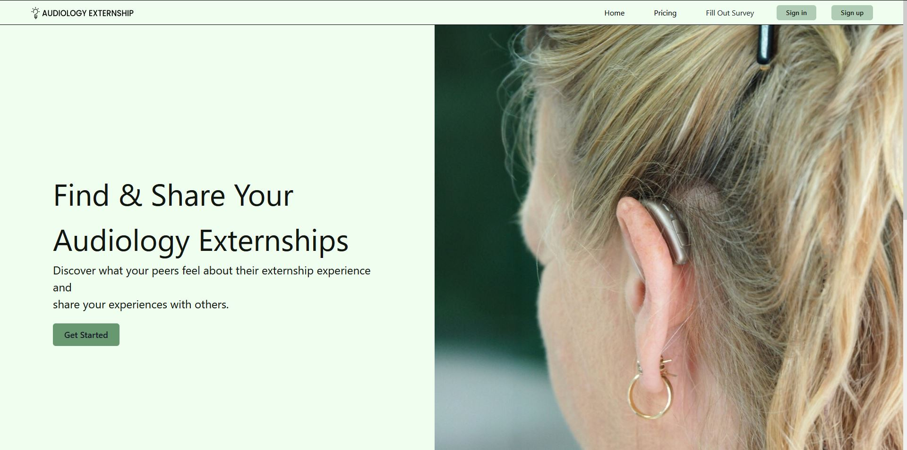

Omar Martinez / iOS developer
Open to iOS opportunities
Small details.
Better software.
I turn thoughtful ideas into apps that feel right.
Building for iPhone, with care for the people behind every tap.
Explore my work ↓01 / Selected work
Built with purpose.
Ostinova
Find your rhythm.
Keep your focus.
01 / Native iOSIn development
Ostinova
Less switching. More practicing.
A local-first companion that brings a metronome, practice routines, scales, and audio/video recording into one focused experience for musicians.
My focusProduct design and iOS engineering, from deterministic practice playback to on-device media and StoreKit entitlements.
Explore the case study ↗
02 / Native iOSOpen source
Music Player
Your library. Your listening experience.
A native home for local audio, with playlists, Favorites, artwork editing, and playback that follows you to the lock screen.
Engineering focusReliable file imports, persistent relationships, and actor-isolated playback state with Swift 6 concurrency.
Explore the code ↗Audiology Externship ↗
Audiology Externship

03 / Full-stack webTeam capstone
Audiology Externship
A clearer path to an externship.
A platform for audiology students to share externship experiences through surveys and explore information that supports their next step.
Team Code EnjoyersBuilt with an eight-person senior-project team for a faculty client, combining accounts, search, survey data, and subscriptions.
Explore the project ↗
m.Also buildingMartinez Studio
A home for the apps I’m bringing to life.
↗
02 / Behind the work
Curiosity first.
Care in the details.
I’m Omar, an iOS developer who enjoys taking an idea all the way through design, development, testing, and preparation for release.
I care about software that’s easy to understand, dependable, and respectful of the people using it. My work spans native audio, on-device persistence, and the small interactions that make an app feel considered.
Build thoughtfully
Swift · SwiftUI · SwiftData
AVFoundation · StoreKit · React
Make it dependable
Automated testing · Accessibility
Explicit state · Privacy-aware design
Ostinova’s public case study documents the product and engineering. Source access and a walkthrough are available to hiring teams on request.